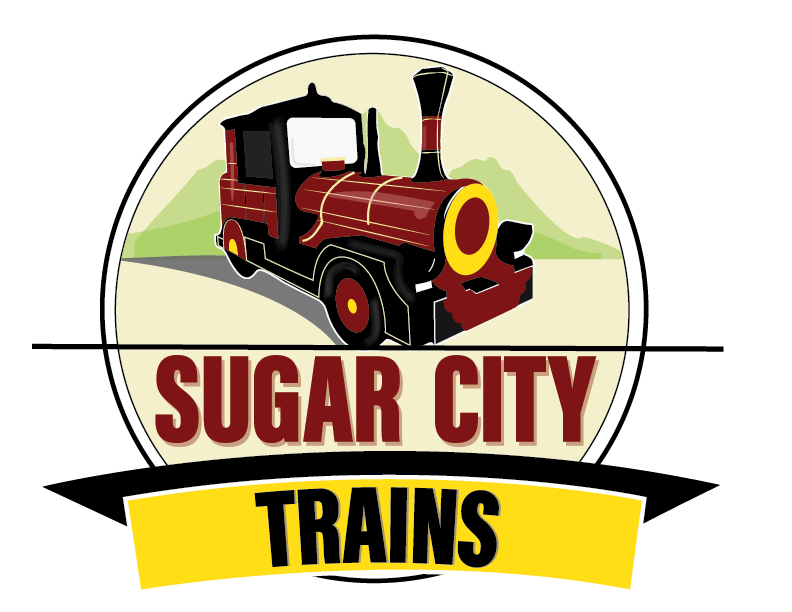

☰ MENU
|  |
We at Sugar City Trains realized the need to bridge the gap between the history of St. Kitts, specifically, Basseterre and persons, both visitors and locals alike. We thought the way to do this best was by a guided tour on our train, the Sugar City Train. So many historical icons exist in Basseterre alone each one representing our tragic past and how we over came each struggle.
The company is pleased to be able to provide this service with a professional and experienced staff. All our tour guides and drivers are certified by our very own St. Kitts Tourism Authority and boast of experience in the field. So let's time travel through Basseterre and become more appreciative of the Kittitian story.
We begin our journey from Port Zante, where we then travel to the island main road. We then turn up Church Street and turn left on that road. We journey past the monuments and onwards to Heros Park. We then take a stop at the park for pictures and fact learning. Afterwards we go on the island main road and travel on the Bay Road. We continue past the Industrial Park, afterwards we return to Port Zante for the end of our tour.
St. Kitts was the first British Colony during the 16th Century. St. Kitts was called Liamuiga by the native Kalinagos, it means land of water and sunshine due to the islands ever present sun and constant water supply. St. Kitts was owned by the French for a short period, the British then took over and continued their reign. Slavery ended in the 1800s. St. Kitts became an independent colony on September 1st 1983. The national song was written by someone. The national flag was designed by someone.
St. Kitts national dish is spicy plantain, steamed breadfruit and stew saltfish. There were several riots during slavery. These riots and rebellions led to the resistance that rewarded the people with Independence. There are 5 national heroes. There have been 4 Prime Ministers. Basseterre was named after the French came.
St. Kitts is officially called St. Christopher after Christopher Columbus. Christopher Columbus landed in Old Road first. Basseterre is the capital of St. Kitts. Many historical facts exist and will be explained on the tour, so join us!
St. Kitts is in the West Indies. It is a member of the Organization of the Eastern Caribbean States. It uses the Eastern Caribbean Dollar but United States Dollar is also accepted. Nevis is the sister island which makes them both the Federation of St. Kitts and Nevis. They share one flag, one national song, one national bird, one national wear and one national dish. Nevis is 48 sq miles and St. Kitts is 68 sq miles. Ferries run between both islands usually on a 2 hour difference. It takes 45 minutes to an hour for the entire boat ride. St. Kitts isa predominantly English speaking federation.